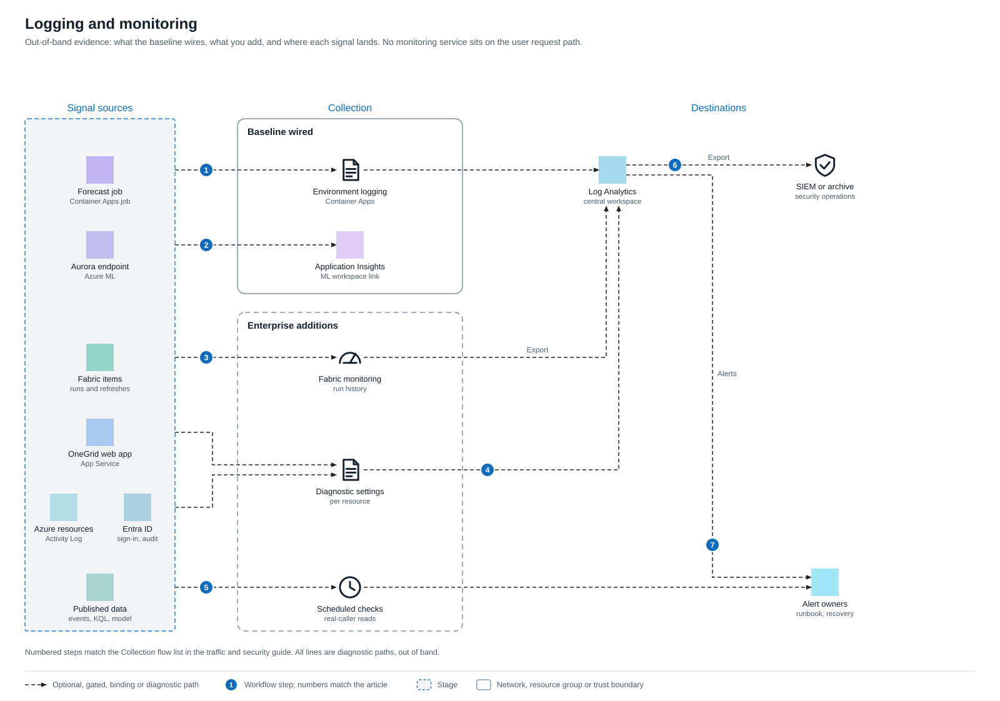
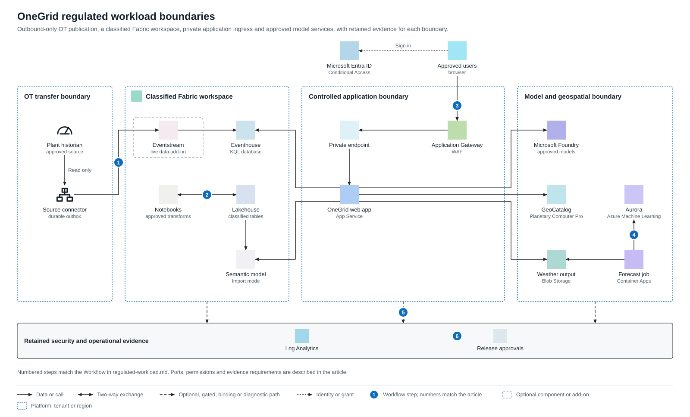
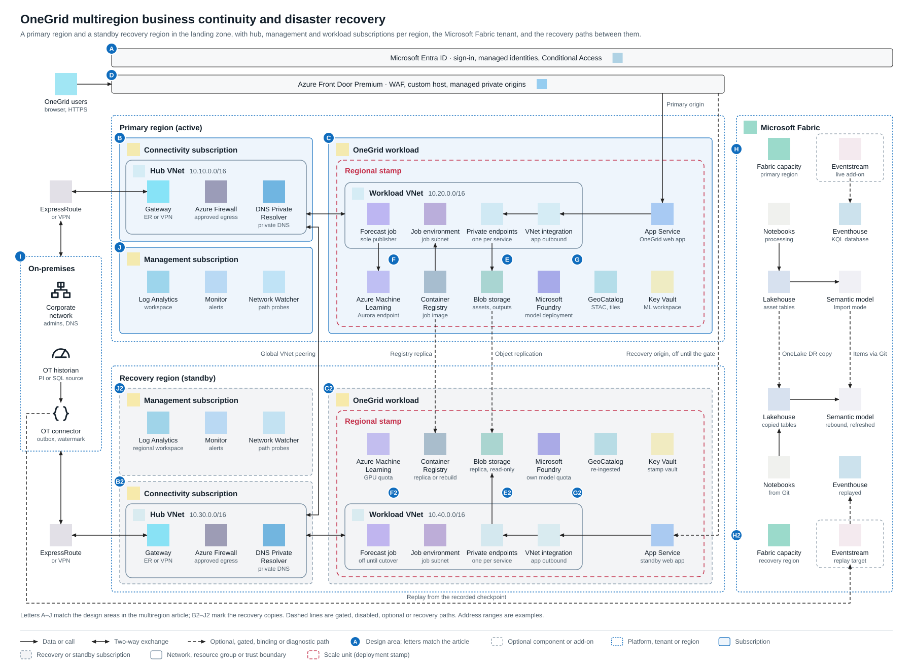

OneGrid detailed reference architecture
Nine source-reviewed sheets: real callers, service boundaries, ports, DNS, identity grants, source access, monitoring and recovery. Example network addresses are design allocations, not live Azure inventory.
Both SVG and PNG images are exported by draw.io Desktop from native editable diagram XML.
Editable light draw.io | Editable dark draw.io | Routing, identity and evidence guide
Baseline
TEMPLATE + RUNTIME CONTRACT | Public service endpoints with authentication; private enterprise networking is an additional implementation.
Light SVG | Light PNG | Dark SVG | Dark PNG


Fabric
ACTUAL ITEM CONTRACTS | Fabric is SaaS. Client Private Link, source connectivity, refresh credentials, and item permissions are independent.
Light SVG | Light PNG | Dark SVG | Dark PNG


Enterprise networking
ENTERPRISE ADDITIONS | Example CIDRs, not discovered Azure addresses. Baseline Bicep does not create these VNets, private endpoints, gateway or firewall.
Light SVG | Light PNG | Dark SVG | Dark PNG


DNS and private endpoints
ENTERPRISE DNS BLUEPRINT | Example static IP plan. DNS resolution, route reachability, service public access and identity authorization are four separate checks.
Light SVG | Light PNG | Dark SVG | Dark PNG


Weather orchestration
RUNTIME CODE + ENTERPRISE NETWORK OVERLAY | One scheduled CPU job; separate standing GPU inference; customer imagery is not an Aurora input.
Light SVG | Light PNG | Dark SVG | Dark PNG


Identity and authorization
AUTHORIZATION MAP | Purple arrows represent grants / token context, not inline network proxies. Network reachability never substitutes for data permission.
Light SVG | Light PNG | Dark SVG | Dark PNG


Logging and monitoring
OUT-OF-BAND OBSERVABILITY | Baseline-wired destinations are distinguished from enterprise diagnostic/collection additions. No monitoring service proxies user requests.
Light SVG | Light PNG | Dark SVG | Dark PNG



Regulated workload
ENTERPRISE / REGULATED BLUEPRINT | Controls below require implementation and evidence; they are not blanket enforcement provided by the baseline deployment.
Light SVG | Light PNG | Dark SVG | Dark PNG



Multiregion recovery
RECOVERY BLUEPRINT | Example primary/recovery address plans. Front Door Premium uses its own managed Private Link origin path, not a customer-subnet gateway.
Light SVG | Light PNG | Dark SVG | Dark PNG


